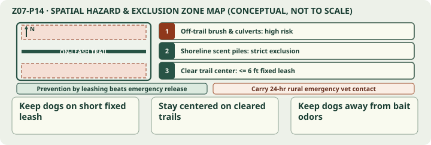

Z07-P14 · Traps and snares · New manuscript
Short-Leash Dog Control and Trail-Edge Exclusion in Season
Protect companion dogs from severe or fatal trap encounters through short-leash discipline and wide trail-edge awareness.
When it applies · Walking dogs on open multi-use forests, WMAs, and rural corridors during trapping seasons.
Equipment · Non-retractable 6-foot leash, well-fitted collar/harness, local emergency vet phone number.

Actions
- Keep dogs on a short, non-retractable leash (six feet or less) whenever walking open multi-use public lands during autumn and winter furbearer seasons.[L10]
- Prevent dogs from darting into roadside culverts, beaver-dam edges, hollow logs, or brushy bait piles where scent-baited sets are most commonly placed.[L10, L12]
- Save the nearest 24-hour emergency veterinary clinic number offline before traveling in rural areas during open hunting and trapping seasons.[L10]
Failure recognition · Using a long retractable leash or letting a scent-driven dog roam into brush off-trail allows instant entry into a lethal body-gripping or cable device.[L10, L12]
Verify · Dog stays on a short fixed leash on clear trail tread, away from shoreline/culvert odors, with emergency vet contact saved.[L10]
Stop or change course · Stop and immediately pull dogs back onto clear ground whenever strong carcass, fish, or musk lure odors are noticed.[L10, L12]
Evidence and editorial notes
- L10 · Minnesota DNR · Minnesota Trapping Regulations and Fur Harvest Rules (Current web edition)
- Section: Human and pet hazard recognition around lawful trapping areas · Conditions: Walking dogs or hiking in open public-use lands during furbearer seasons
Support: Keep dogs on short leashes on open multi-use lands during autumn/winter trapping seasons, avoid bait piles and shoreline culverts, and carry vet contact info.
Limitations: Body-gripping and cable devices present rapid fatal risk to unleashed pets; prevention via leashing is far safer than emergency release. · Conflicting evidence: None noted.
Editorial note: Core Z07 bystander & pet hazard prevention. · Specialist reviewer: Veterinary and outdoor-safety reviewer
Primary source · checked 2026-11-25 - L12 · Minnesota DNR · Living with Black Bears and Encounter Safety (Current web edition)
- Section: Attractant, bait-site, and carrion encounter avoidance · Conditions: Field travel near carrion, bait stations, or water-edge cubbies
Support: Strong odors, feathers, flagged stakes, or disturbed shoreline funnels can indicate carrion, bear feeding sites, or active regulated sets.
Limitations: Route wide around suspect attractants and keep companions and pets close. · Conflicting evidence: None noted.
Editorial note: Hazard-recognition field cue for Z07. · Specialist reviewer: Wildlife safety specialist
Primary source · checked 2026-11-25
Source lineage · New manuscript (Z07 P18 pet safety) · Classification · New manuscript.